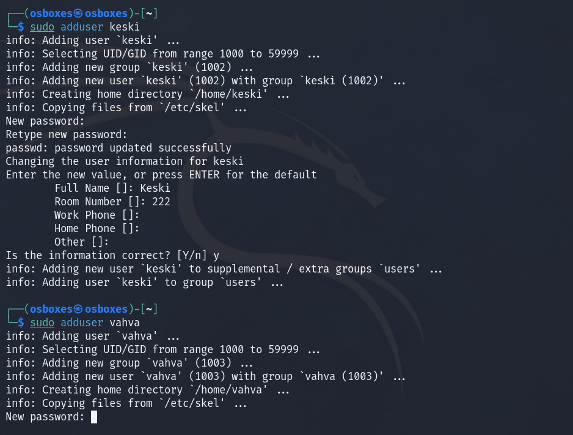
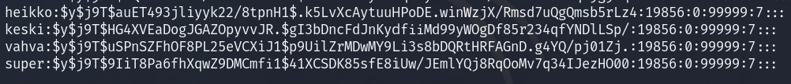
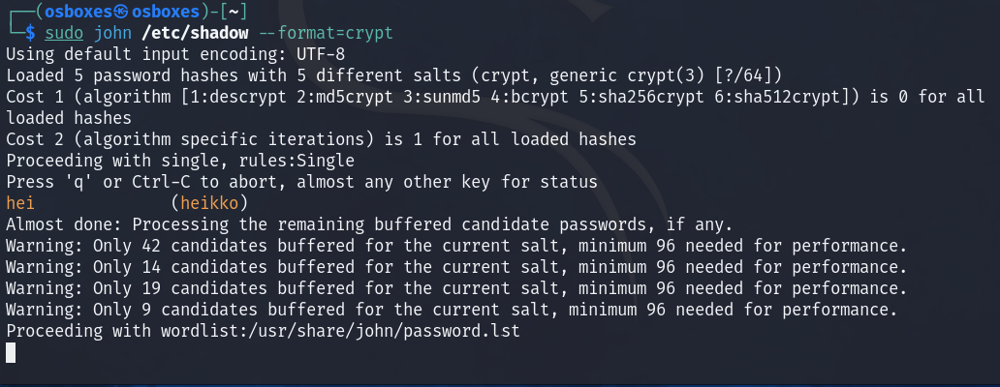
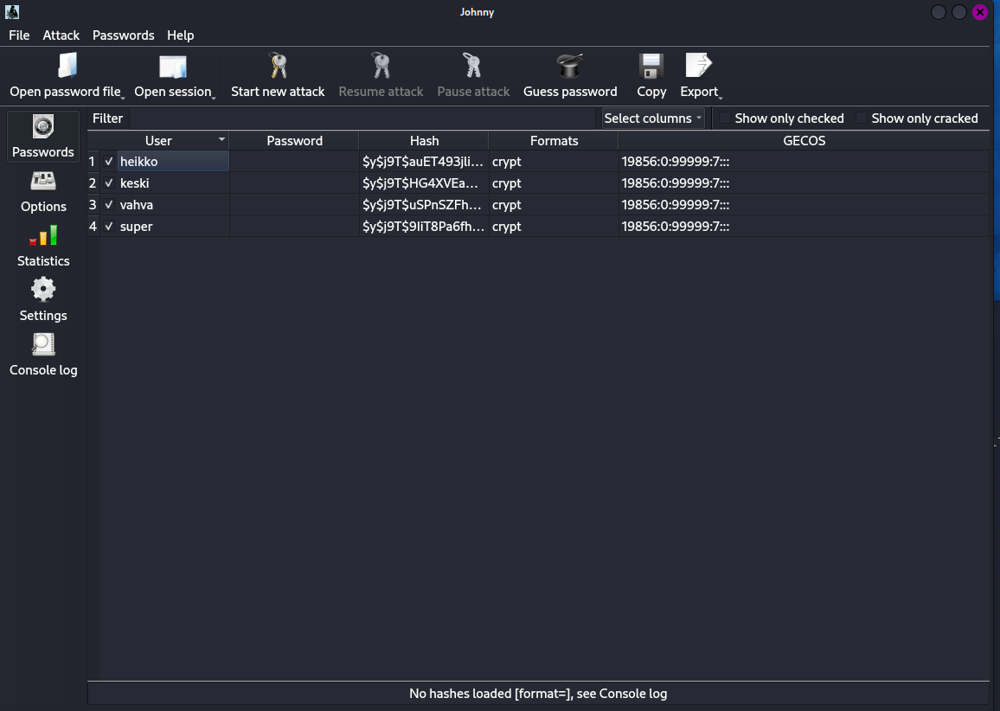
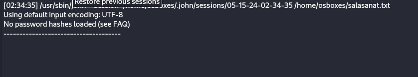

Kolme uutta käyttäjää: heikko, keski ja vahva ja nimiä vastaavat salasanat.

Luotujen käyttäjätunnusten murtaminen
Kokeiltu John The Ripper ja komentoa john /etc/shadow, mutta tämä ei toiminut.
Manuaalisesti avasin /etc/shadow ja siellä näkyi kaikkien (heikko, keski, vahva ja super) käyttäjien tiedot ja hashit

Googlailu kertoi että kyseinen hash-muoto on yescrypt ($y$) ja esim. että John The Ripper tukee vain epäsuorasti yescryptiä https://security.stackexchange.com/questions/252665/does-john-the-ripper-not-support-yescrypt
Tämän jälkeen onnistui. Heikon salasanan ohjelma mursi heti. Sen jälkeen näytti, että John The Ripper päätti ottaa käyttöön sanalistan (Proceeding with wordlist)...

Mutta mun koneeni (tai siis virtuaalikone) ei ole ilmeisesti hakkerointiin soveltuva, sillä se rullaa hyvin hitaasti ja vaikka jätin yöksi päälle, niin se ei saanut siinäkään ajassa ratkottua muita.
Jäin miettimään, että voisiko graafinen versio toimia paremmin ja latasin koneelle Johnnyn ja tallensin luomieni käyttäjien tiedot omaan tiedostoon, niin ohjelma ei myös yrittäisi ratkoa omaa salasanaani.
Johnny oli teoriassa helppo käyttää, mutta siinäkin törmäsin ongelmaan: ettei hashiä ole ladattu, vaikak selkeästi Johnnyn password sivulla näkyy se, että on osannut erotella käyttäjät, hashin ja muut...

Eli takaisin komentorivikäskyihin. Heikko murtuu parissa sekunnissa, mutta muut eivät. Laskeskelin https://www.security.org/how-secure-is-my-password/ sivuston avulla miten kauan pitäisi kestää murtaminen: (heikko 400 nanosekuntia, keski 22 millisekuntia, vahva 800 mikrosekuntia (vahva oli itseasiassa lyhyempi kuin keski, minkä vuoksi nopeampi purkaa erikoismerkistä huolimatta...) ja superin murtamisessa menisi 6kk (eli ei tämän kurssin aikana)
Kun laskeskelin, että jos heikon murtamiseen meni mun koneella pari sekuntia, niin keski murtamiseen menee 55000 kertaa kauemmin, eli mun koneella 15-30 tuntia (55000 * 1s = noin 15 tuntia ja 55000 * 2s = noin 30 tuntia)
Salasanan murtaminen sanakirjojen ja sateenkaaritaulukoiden avulla